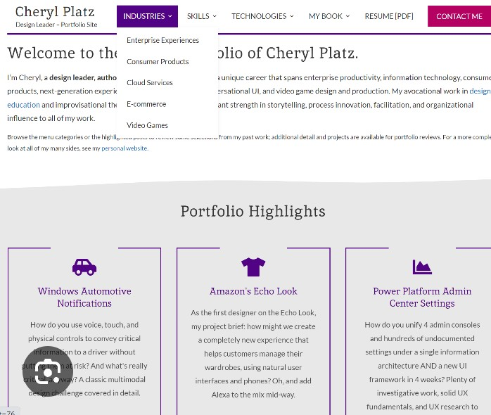
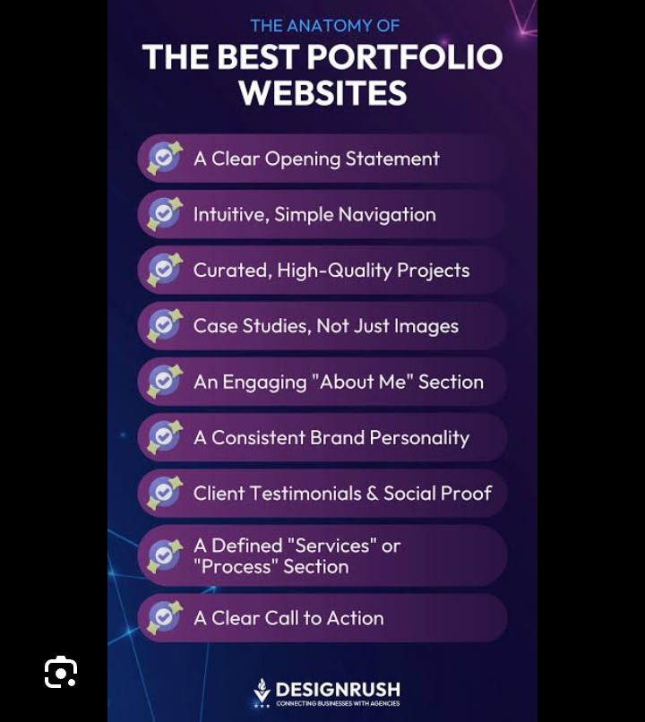
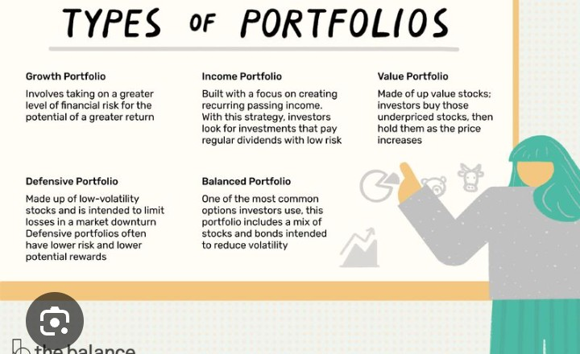

A portfolio website is one of the most valuable assets for students, freelancers, and professional developers. It acts as your online identity, allowing employers, clients, and recruiters to explore your skills, projects, experience, and achievements in one place. Unlike a traditional resume, a portfolio website provides interactive demonstrations of your work and highlights your abilities through real projects.
In today's competitive job market, having a well-designed portfolio website can significantly improve your chances of getting internships, freelance projects, and full-time jobs. Whether you are a front-end developer, back-end developer, UI/UX designer, Python programmer, or full-stack developer, a professional portfolio helps you stand out from thousands of other candidates.

A portfolio website is a personal website that showcases your professional skills, completed projects, education, certifications, and contact information. Instead of simply telling people what you can do, it allows you to demonstrate your abilities through practical examples.
Recruiters often review portfolios before scheduling interviews because they provide a better understanding of a candidate's technical knowledge, creativity, and problem-solving skills.
A professional portfolio should be simple, organized, and easy to navigate. Visitors should quickly understand who you are and what you do.
Your homepage is the first thing visitors see, so it should immediately communicate your profession and expertise. Add a professional headline, a short introduction, a clear profile image or logo, and a call-to-action button such as "View Projects" or "Contact Me."
Keep the design clean with enough white space, readable fonts, and consistent colors. Avoid adding unnecessary animations that may distract users or slow down the website.

Create a dedicated skills section that clearly lists your technical abilities. Group related skills together to improve readability.
Adding progress bars, skill cards, or icons can make this section more attractive, but always ensure the information remains accurate and easy to understand.
A professional portfolio website is more than just a collection of projects—it is your personal brand on the internet. A well-structured homepage, organized sections, and clear presentation help create a positive impression and encourage visitors to learn more about your work.
The projects section is the heart of every portfolio website. Recruiters and clients want to see practical examples of your work instead of only reading about your skills. Include your best projects with a short description, the technologies used, screenshots, and links to the live demo or GitHub repository whenever possible.
Each project should explain the problem it solves, the tools you used, and the features you implemented. Well-documented projects demonstrate both technical ability and communication skills.
Your About Me section should introduce you professionally while highlighting your interests, experience, and career goals. Keep it concise but informative. Mention your technical skills, learning journey, and passion for technology without making the section too long.
A professional photograph or personal logo can also make this section more engaging and trustworthy.
Many recruiters prefer downloading a resume for future reference. Include a clearly visible "Download CV" or "Download Resume" button that allows visitors to access your latest resume in PDF format.

A portfolio should look professional on desktops, tablets, and smartphones. Responsive design ensures that your layout automatically adjusts to different screen sizes without breaking the design.
Fast-loading websites create a better user experience and improve SEO. Compress images, minimize CSS and JavaScript files, enable browser caching, and avoid unnecessary animations that slow down page loading.
Search Engine Optimization helps your portfolio appear in search results. Use descriptive page titles, proper headings, meta descriptions, image alt text, and meaningful URLs. Creating a blog section with useful articles can also improve your website's visibility and attract more visitors.
Make it easy for visitors to contact you. Add a contact form along with your email address, GitHub profile, LinkedIn profile, and other professional social media links. Ensure that your contact information is always up to date.
A well-organized portfolio with strong projects, responsive design, fast performance, and clear contact information leaves a lasting impression on recruiters and potential clients.
Many beginners create portfolio websites that look attractive but fail to communicate their skills effectively. A portfolio should be simple, professional, and focused on your work. Avoid adding unnecessary animations, too many colors, or excessive text that distracts visitors from your projects.
After completing your portfolio, publish it online so recruiters and clients can access it easily. GitHub Pages is an excellent free hosting platform for static websites. You can also use Netlify or Vercel for fast, reliable hosting with automatic deployment from GitHub.
Choose a professional domain name whenever possible. A custom domain creates a stronger impression and makes your portfolio easier to remember.
A portfolio is never truly finished. As you learn new technologies and complete new projects, update your website regularly. Replace older projects with better ones, add new certificates, improve your skills section, and keep your resume current.
An active portfolio shows recruiters that you continue learning and improving your abilities.
Your portfolio represents your personal brand. Use a consistent color scheme, readable typography, and a professional logo or profile picture. Write confidently about your skills while remaining honest about your experience.
A professional portfolio website is one of the best investments for your career. It allows you to showcase your skills, projects, achievements, and personality in a way that a traditional resume cannot. By maintaining a clean design, publishing quality projects, optimizing for mobile devices, improving website performance, and updating your content regularly, you can create a portfolio that attracts recruiters, impresses clients, and opens new career opportunities. Keep learning, keep building, and let your portfolio reflect your growth as a developer.